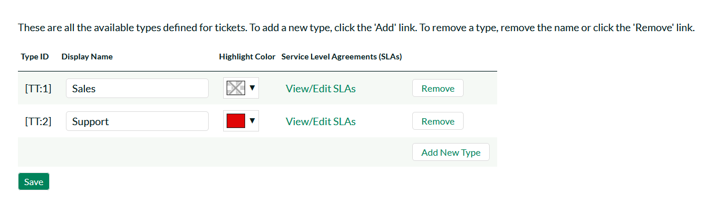

Help Desk Settings¶
This section contains all of the settings that affect the help desk ticketing part of the application.
Custom Fields¶
Tickets in the Help Desk system can have up to 20 custom fields. There are different types of custom fields allowed:
-
Text: Normal or Rich-Text field.
-
Integer: Whole-Number entry.
-
Decimal: Fractional number entry (currency, etc.)
-
Boolean: Simple yes/no (on/off) checkbox.
-
Date: Date selector.
-
List: Custom List selector.
-
Multi-List: Custom List selector that allows multiple values.
-
User: List of assignable users.
Each custom field can have optional settings applied to it. Optional settings are as follows. (Note that not all settings are available for all field types.)
-
Default: The default value when a new ticket is opened up.
-
Precision: How many decimal places is allowed (or the value is rounded to).
-
Minimum Value: The minimum value allowed.
-
Maximum Value: The maximum value allowed.
-
Minimum Length: The minimum length of the data required in the field.
-
Maximum Length: The maximum length of the data allowed in the field.
-
Rich Text: Whether or not the text field allows HTML or not.
-
Custom List: The defined Custom List for the field that users can select from.
Going to the main page, you will see a list of custom field defined for Tickets:

To edit a definition, click the Edit Definition link on a field, and you will get a popup:
The fields visible will vary depending on the type of custom field you have selected, but every custom field will need to have an Alias and a Type. The Alias is what is shown to the user when viewing or editing the ticket. The type is the type of data the ticket allows.
Under the Options tab will be available options that can be set for the custom field.
When finished, click the 'Save' button and you will be returned to the Custom Field list.
Important Note: When changing a custom field's type or removing a field, the data is not actually removed from the ticket. Therefore, if you change a custom field of a date into a text, the field will display the old date value until it is changed by the user.
Ticket Statuses¶
Ticket statuses can be edited using the grid that displays all defined statuses.

All statuses must have a display name, which is viewed by the user editing or viewing the ticket. The other fields are:
-
Closed for Internal? - Whether this status is considered as inactive for internal users (employees, support agents, etc.). For example the sample status 'Waiting on Customer' would be considered 'Closed for Internal' because customer support agents do not want to see such tickets in their list when it's waiting for a customer to respond.
-
Closed for External - Whether this status is considered as inactive for external users (customers, etc.). For example the sample status 'Waiting on Customer' would be considered 'Open for External' because end users / customers would definitely want to see such tickets in their list since the support agent is waiting for their response.
-
Default? - The status selected as the default is the status that new tickets are opened as.
To add a new Status, click the Add New Status link -- a new row will be inserted into the table where you can save the new status.
To remove a status, click the Remove link. Any tickets with a status that has been removed will stay that status, until the next time a user edits the ticket.
In addition to this screen that lets you edit the ticket statuses, if you click on the "Advanced" option in the left hand navigation, it will bring up the screen that lets you specify some additional status change rules:

There are several options you can configure:
-
The Default Open Status -- this allows you to specify the status that a ticket will be automatically switched to when a new note is added by the person who originally opened the ticket. This is useful when a customer accesses one of their existing tickets that's in a closed status but forgets to change the status back to an open status. This ensures that such tickets do not get forgotten about.
-
The Default Assigned Status -- this allows you to specify the status that a ticket will be automatically switched to when you use the bulk assign tools on the main Help Desk page. For example five new tickets arrive and you select them and choose the option to "Assign Tickets to Me". When they are assigned in this way, the system will automatically change their status to the default assigned status option (if specified).
-
Closed Status -- After a set amount of time, an open ticket can be automatically closed. This will only happen if a ticket is set to a status that is not open for internal (customer service), but is open externally (for customers). The dropdown list contains the status that the ticket will be switched to.
-
Age of Ticket - Allowable values: 7-365. After the ticket is this number of days old, the status will be automatically closed.
Ticket Types¶
The Ticket Type page defines values allowed for the standard Type field for tickets. Types must have a unique display name, which is what the user sees when they view or edit a type.

To add a new type, click the Add New Type link, and fill out the new empty row.
To remove a type, click the Remove button to the right of the defined type. Note that any tickets assigned to a type that is removed will retain their type, until the next time a user tries to edit the ticket.
Ticket Priorities¶
The Ticket Priorities page defines values allowed for the standard Priority field. Like types, priorities must have a unique name.

To add a new priority, click the Add New Priority link, and fill out the new empty row.
To remove a priority, click the Remove button to the right of the priority. Note that any tickets assigned to a priority that is removed will retain their value, until the next time a user tries to edit the ticket. Colors assigned to the priority will appear in the Ticket List page in the Priority column.
Ticket Resolutions¶
The Ticket Resolutions page defines values allowed for the standard Resolution field. Like types and priorities, resolutions must have a unique name. The description is used internally, and should just contain a short summary of the meaning of the resolution.
To add a new resolution, click the Add New Resolution link, and fill out the new empty row.
To remove a resolution, click the Remove button to the right of the resolution. Note that any tickets assigned to a resolution that is removed will retain their value, until the next time a user tries to edit the ticket.
Spira Integration¶
When customer support agents work on tickets received from customers, they may find that the issue is actually a product defect rather than a customer support matter. In which case, they can take advantage of the built-in integration with SpiraTeam® - Inflectra's award winning Application Lifecycle Management (ALM) solution that has a powerful product incident management system.
KronoDesk® has the ability to connect to an instance of SpiraTeam® and add new product incidents into the system that are linked to the originating KronoDesk Ticket. That allows customer service agents to monitor the status of the associated product incidents and inform customers when the appropriate patches or fixes are available to correct the problem.
This screen allows the administrator to setup the connection between SpiraTeam and KronoDesk.

You should enter the URL that your users use to access their instance of SpiraTest, SpiraPlan or SpiraTeam (including the HTTP or HTTPS prefix) together with the SpiraTeam login and RSS Token for a valid SpiraTeam user. The login and associated RSS Token is used to verify the connection.
Once you have entered the information, you should click the [Test] button to verify that the URL is accessible. If there are connectivity issues, and error will be displayed, otherwise a green confirmation message will appear. Once the connection information has been successfully verified, you need to click the [Save] button to save the connection settings in the system.
Ticket Article Templates:¶
Templates can be created for quick replies to support tickets. This allows for support agents to quickly respond to support tickets referencing a related KB Article.
You can edit or create a new template, and to reference the selected KB Article, you can use a set of templates, available in the ([T]) toolbar button. The support agent can then select one of these templates on the Ticket Details page, along with a KB article to insert into the agent's reply.